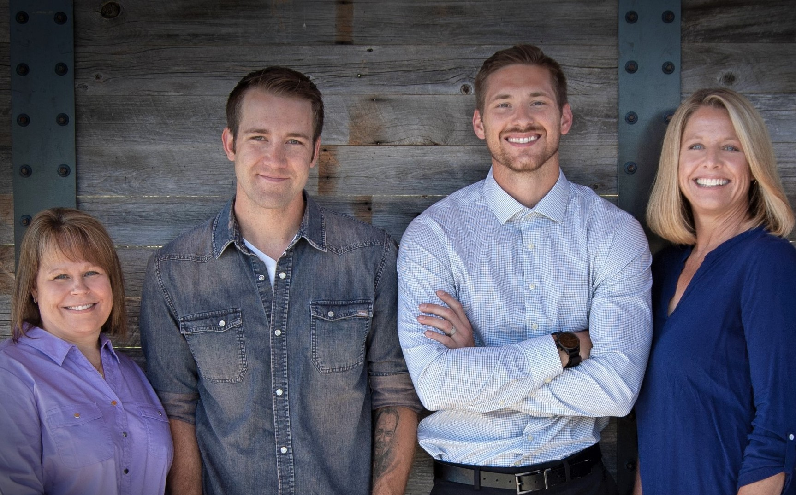

The Elevate Team
Elevate Wyoming is based in Wyoming and provides resources to Wyoming companies, so we can make things better for Wyoming. We are Wyoming natives who understand our communities and how we do business. Our team has worked with organizations of all sizes in the biggest industries and the largest markets.
Elissa Ruckle has been working in the employee development field for over twenty years, fifteen of those here in Wyoming. She has extensive experience as a curriculum designer, program facilitator, and project leader. In her current role as owner of Elevate Wyoming, she gets to wear all those hats (and a few more). Elissa is dedicated to helping others succeed and passionate about the importance of personal relationships - how they affect the workplace and business cultures and how they shape our community as a whole. A native of Wyoming and graduate of UW (#GoPokes), she’s excited to have a son graduating from Laramie and a daughter who plans to attend after high school. When not working, you can find her exploring new places with her family, backpacking in the mountains of Wyoming, playing in the dirt of her gardens, or enjoying coffee and conversation with others.


Kyle has a background in psychology and behavioral health, giving him insight into how people think and how programs can successfully engage their participants. The author Daniel Pink argues that “there is a difference between what science knows and what business does” and Kyle has made it part of his personal mission to help bridge that gap. A lifetime of building genuine relationships within his community has forged in him a deep passion to make Wyoming an even better place to live and work. He may not have traveled enough yet to support the claim that it’s the BEST place in the world to settle down…but he’s pretty sure it’s near the top. He finds happiness in many things, but first and foremost is his family, his wife, and their one-year-old daughter. What keeps them here is the powerful sense of community and the amazing access to natural resources, especially mountains and rivers.
Laurie Davis brings order out of chaos. With over twenty years in administrative roles in HR, healthcare, and energy, Laurie combines broad expertise with a genuinely friendly and helpful personal style. She flows seamlessly from writing policies and coordinating event logistics to designing marketing campaigns and joining in collaborative team meetings. After being born and raised in Wyoming, she ventured to Denver but came back home because she savors the size of our community and our ability to have a genuine positive impact in it. She loves hanging out with her family and watching her grand baby learn and grow. When at her most peaceful, you’ll find Laurie doing early morning yoga before her husband and dogs have even gotten out of bed.


Luke Gilliam genuinely wants to help people and make a difference in our community. His passion for leadership has influenced every job he’s had, activity in which he’s participated, and even the major he chose in college. Positions in athletics, education, and finance have shown him that many people hunger for good programs to help them do their jobs better, set themselves up for future opportunities, and go home happy while on that journey. Given these interests, you might not be surprised to hear he’s a lifelong learner about personal leadership, talent development, and team performance. Having lived in Colorado and Texas, he feels blessed to have married a Wyoming native and to live in a place that feels like home. When not reading, listening to a podcast, writing his own book, watching The Office or Seinfeld with his wife…you might find Luke celebrating the newest trick learned by their puppy Cosmo.
Elissa Ruckle has been working in the employee development field for over twenty years, fifteen of those here in Wyoming. She has extensive experience as a curriculum designer, program facilitator, and project leader. In her current role as owner of Elevate Wyoming, she gets to wear all those hats (and a few more). Elissa is dedicated to helping others succeed and passionate about the importance of personal relationships - how they affect the workplace and business cultures and how they shape our community as a whole. A native of Wyoming and graduate of UW (#GoPokes), she’s excited to have a son graduating from Laramie and a daughter who plans to attend after high school. When not working, you can find her exploring new places with her family, backpacking in the mountains of Wyoming, playing in the dirt of her gardens, or enjoying coffee and conversation with others.
Kyle has a background in psychology and behavioral health, giving him insight into how people think and how programs can successfully engage their participants. The author Daniel Pink argues that “there is a difference between what science knows and what business does” and Kyle has made it part of his personal mission to help bridge that gap. A lifetime of building genuine relationships within his community has forged in him a deep passion to make Wyoming an even better place to live and work. He may not have traveled enough yet to support the claim that it’s the BEST place in the world to settle down…but he’s pretty sure it’s near the top. He finds happiness in many things, but first and foremost is his family, his wife, and their one-year-old daughter. What keeps them here is the powerful sense of community and the amazing access to natural resources, especially mountains and rivers.
Laurie Davis brings order out of chaos. With over twenty years in administrative roles in HR, healthcare, and energy, Laurie combines broad expertise with a genuinely friendly and helpful personal style. She flows seamlessly from writing policies and coordinating event logistics to designing marketing campaigns and joining in collaborative team meetings. After being born and raised in Wyoming, she ventured to Denver but came back home because she savors the size of our community and our ability to have a genuine positive impact in it. She loves hanging out with her family and watching her grand baby learn and grow. When at her most peaceful, you’ll find Laurie doing early morning yoga before her husband and dogs have even gotten out of bed.
Luke Gilliam genuinely wants to help people and make a difference in our community. His passion for leadership has influenced every job he’s had, activity in which he’s participated, and even the major he chose in college. Positions in athletics, education, and finance have shown him that many people hunger for good programs to help them do their jobs better, set themselves up for future opportunities, and go home happy while on that journey. Given these interests, you might not be surprised to hear he’s a lifelong learner about personal leadership, talent development, and team performance. Having lived in Colorado and Texas, he feels blessed to have married a Wyoming native and to live in a place that feels like home. When not reading, listening to a podcast, writing his own book, watching The Office or Seinfeld with his wife…you might find Luke celebrating the newest trick learned by their puppy Cosmo.